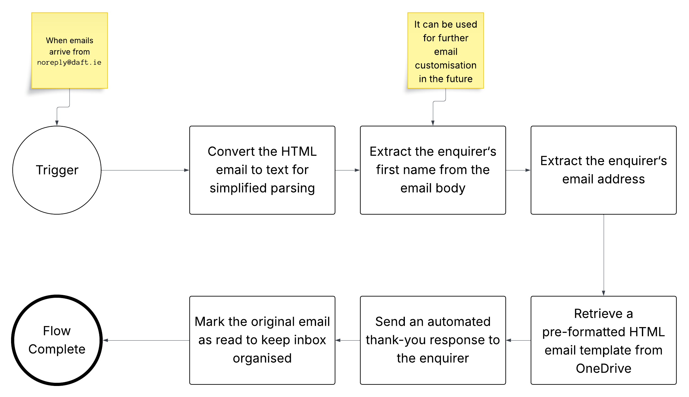

I hold a BA (Hons) in Business and a
Higher Diploma in Science in Computing — both NFQ
Level 8 — from CCT College Dublin, alongside diplomas in Python
and Predictive Analytics. That combination isn't accidental. I
built it to sit exactly where business decisions meet technical
execution.
My work spans process analysis, requirements gathering, AI
automation, and stakeholder management. I'm equally comfortable
translating a boardroom problem into a technical brief and
translating a technical constraint back into a business decision.
Technical execution is rarely the hard part — most things can be
built. The harder question is whether they should be. My focus is
on that decision: what's the actual problem, who does it serve,
and is this solution the right one for it. My focus is business
judgment, identifying what's worth building, what problem it
actually solves, and what the trade-offs are. That's where the
real value gets created.
Qualifications
BA (Hons) in Business — NFQ Level 8
CCT College Dublin
Higher Diploma in Science in Computing — NFQ Level 8
CCT College Dublin
Diploma in Python Programming
Diploma in Predictive Analytics
Volunteer Business Analyst
THE HomeShare | Feb 2025 - Ongoing
Skills & Tools
What I work with.
A toolkit built for the intersection of process, AI, data, and
automation.
THE HomeShare was manually copy-pasting a response template into
every single enquiry from Daft.ie. With ~50 enquiries a day across
two staff members, that was close to two hours of repetitive work
— every day — that added no value to anyone.
Power AutomateMS OutlookOneDriveHTML
Read Case Study
02
AI Automation
Automating Repetitive Reporting
SME, Professional Services
A small professional services firm was spending 6–8 hours per week
manually compiling status reports from multiple data sources. The
process was inconsistent and left little time for actual analysis.
Read Case Study
03
Market Validation
Validating a SaaS Product Before Building
Startup, Early Stage
An early-stage founder had a detailed product spec and was ready
to begin development. The foundational question — whether the
target market actually had this problem at sufficient scale — had
not been answered.
Read Case Study
Services
How I engage.
Three ways to work together — from diagnosis to ongoing execution.
◈
Operational Audit
Identify where your business is losing time and money. A
structured review of your processes, tools, and data flows — with
a clear prioritised report of what to fix first.
◈
Implementation
Build and deploy the systems that fix it. From Power Automate
workflows to AI-assisted pipelines — scoped, documented, and
handed over properly.
◈
Ongoing Support
Managed automation and continuous improvement. Monthly retainer
for businesses that want a dedicated operations and technology
partner, not a one-off consultant.
Get in Touch
Let's work together.
Whether you're hiring or building — I'd like to hear about it.
Open to Business Analyst, Operations Intelligence and Process
Improvement roles in Dublin.
Non-profit organisation, Dublin · Volunteer Business Analyst
Engagement · Ongoing
Tools Used
Power AutomateMS OutlookOneDriveHTMLConfluenceLucidchart
The Problem
THE HomeShare receives a high volume of accommodation enquiries
through Daft.ie every day. Each enquiry triggers an email
notification to a shared inbox — and until this project, someone on
the team had to open each one individually, copy a standard response
template, paste it into a reply, and send it manually.
With approximately 50 enquiries arriving per day across two staff
members, that process was consuming close to two hours of working
time — every single day — on a task that required zero judgement and
delivered no additional value to the applicant.
Analysis & Approach
Before building anything, I assessed the organisation's existing
technology environment. THE HomeShare already operated entirely
within Microsoft 365 — Outlook, OneDrive, and Teams. That ruled out
third-party automation platforms like Make or Zapier: introducing a
new paid tool for a process this well-defined would have added cost,
a dependency, and a maintenance burden that the team would have to
manage themselves.
The better answer was Power Automate, already included in their
Microsoft licence. I designed and built a six-step automated flow:
triggered by any new email arriving from noreply@daft.ie, it
converts the HTML email body to plain text for parsing, extracts the
enquirer's first name and email address, retrieves a pre-formatted
HTML reply template from OneDrive, sends a personalised
acknowledgement to the enquirer, and marks the original email as
read to keep the inbox clean.
I documented the full workflow in Confluence and produced a process
diagram in Lucidchart so that any team member — or future staff
member — can understand, maintain, or adapt the flow without needing
to contact me.
Workflow Diagram

Process diagram produced in Lucidchart and documented in Confluence
Outcome
The manual copy-paste process no longer exists. Every Daft.ie
enquiry now receives an immediate, correctly formatted response
without any human involvement. Based on ~50 daily enquiries at
roughly one minute per reply, the automation saves the team an
estimated two hours of repetitive work per day.
Critically, the solution is owned entirely by the organisation. It
runs on infrastructure they already pay for, it's documented so
anyone can maintain it, and it can be modified — or switched off —
by any team member with access to their Microsoft environment. No
external dependency. No ongoing licence cost. No black box.
Case Study 02 — AI Automation
Automating Repetitive Reporting
SME, Professional Services · Automation Implementation Engagement
The Problem
A small firm was spending 6–8 hours per week manually compiling
status reports by pulling data from CRM, project management, and
billing systems into a single spreadsheet. The process introduced
inconsistencies each week and left senior staff with insufficient
time for analysis and client communication.
Analysis & Approach
Mapped the current reporting workflow end-to-end, documenting data
sources, transformation steps, and distribution logic. Assessed
automation feasibility across three tooling options. Designed and
implemented a Power Automate workflow with scheduled data pulls,
consolidation logic, and automated distribution, with full
documentation for handover.
Outcome
Weekly reporting time reduced from 6–8 hours to under 20 minutes.
The automation has been running without manual intervention for
three months. Senior staff report using the reclaimed time
primarily for client-facing work.
A founder with a fully-scoped product spec was preparing to begin a
4-month development sprint. A structured analysis of market size,
competitive positioning, and buyer willingness-to-pay had not been
conducted. The risk of building the wrong product — or the right
product for a market that wouldn't pay for it — was significant.
Analysis & Approach
Facilitated a structured validation exercise: competitor landscape
mapping, ICP definition, assumption identification, and a series of
8 problem-interview conversations with potential buyers. Synthesised
findings into a validation report with a clear build / don't build /
pivot recommendation and supporting rationale.
Outcome
Validation revealed that the core pain point was real but that the
intended buyer segment lacked budget authority. Recommended a
pivot to a different decision-maker within the same organisation.
Founder restructured the product pitch and go-to-market before
committing to development.